|
|
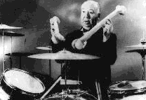
Voici quelques extraits de musiques de
génériques de films célèbres :
-
Spellbound (1945) format WAV 299 Ko
- Rear Window (1954) format WAV 278 Ko
- The trouble with Harry (1956) format WAV 147 Ko
- Vertigo (1958) format WAV 241 Ko
- Psycho (1960) format WAV 202 Ko
- The birds (1963) format WAV 221 Ko
- Marnie (1964) format WAV 222 Ko
- Frenzy (1972) format WAV 309 Ko 
Fenêtre sur cour, le "tournant sonore"
Fenêtre sur cour en 1954 (format WAV 278 Ko)
est un "tournant sonore" dans la carrière d'Hitchcock ;
à partir de ce film, le son et la musique vont avoir un rôle essentiel dans ses films.
Serge Daney écrit :
Fenêtre sur cour, ce film à propos duquel on a toujours parlé
de regard, de voyeurisme et pulsions scopiques, est aussi (et peut
être avant) une formidable partition sonore et que, sans elle, il
n'aurait peut être pas aussi bien vieilli.
La cour sur laquelle donne la fenêtre est avant tout un bain sonore,
saturé, urbain, plein de rumeurs et de promiscuité, d'air chaud et
de réverbération inavouable.
Et dans ce magma sonore il y a une petite chanson qui fraie son
chemin et dont finalement tout dépend.
Ecoutez Fenêtre sur cour.
(Libération 08-02-84)
Alfred Hitchcock dira de Fenêtre sur cour:
Il y a une chose qui m'a rendu assez malheureux dans ce film,
c'est la musique.
Nous avions de l'autre coté de la cour le musicien qui s'enivre;
je voulais qu'on l'entende composer une chanson, la développer,
et qu'à travers tout le film on entende l'évolution de cette chanson
jusqu'à la scène finale où elle serait jouée sur un disque avec
toute l'orchestration. Ca n'a pas marché.
J'ai été très déçu.
Pourtant une partie importante de l'idée initiale d'Hitchcock subsiste dans ce film :
quand le compositeur a terminé la musique, c'est en l'entendant que la femme seule renonce
à se suicider et, au même moment, toujours grâce à la musique, James Stewart réalise
qu'il est amoureux de Grace Kelly.
Pendant le film suivant, La main au collet (1955), Alfred Hitchcock rencontrera le compositeur
Bernard Herrmann. Celui-ci composera la musique des 9 films suivants, 9 des plus grands succès d'Alfred Hitchcock.
Cette association des plus marquantes au cinéma est à rapprocher des couples Sergio Leone - Ennio Morricone,
Frederico Fellini - Nino Rota...
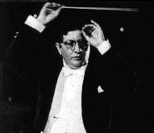
BERNARD HERRMANN Musicien américain, né à New York en 1911, mort en Grande Bretagne en 1975. Il compose dès 1933 la musique de milliers de programmes radio dont le célèbre
"Guerre des mondes" (1938) d'Orson Welles.
C'est pour ce dernier qu'il signe sa première partition de film Citizen Kane (1940),
puis La splendeur des Amberson (1942). Ce sont ensuite L'aventure de madame Muir (Mankiewicz, 1947), La maison dans l'ombre (N.Ray 1951)
et L'affaire Cicéron (Mankiewicz 1952).
De 1955 à 1966, il compose la musique des 9 films d'Hitchcock.
Il collabore ensuite avec François Truffaut, La mariée était en noir (1967),
puis avec Brian DePalma, Soeurs de sang (1972), Obsessions (1974). Il crée sa dernière musique de film pour Martin Scorsese, Taxi driver (1975). Scorsese lui dédiera son film.
La collaboration Hitchcock-Herrmann Après Mais qui a tué Harry (1955) (format WAV 147 Ko),
leur première collaboration,
Herrmann compose la musique du remake de L'homme qui en savait trop (1956):
ce fut la révélation du tandem Hitchcock-Herrmann.
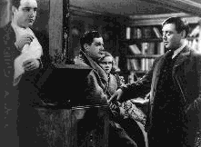 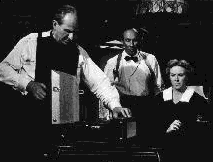
Il est intéressant de faire le parallèle entre les deux scènes de l'Albert Hall :
les espions ont donc décidé de tuer l'ambassadeur pendant le concert. Ils ont convenu
que le tueur devra tirer pendant l'exécution de la cantate au moment exact où sera
donné l'unique coup de cymbale de la partition. Ils ont répété l'attentat en écoutant plusieurs fois
la cantate sur disque.
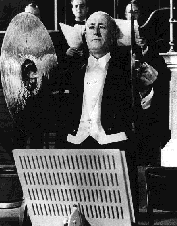
Le concert commence donc, tous les personnages sont en place et nous attendons avec une angoisse
croissante le moment où le cymbaliste impassible va utiliser son instrument.
Dans la deuxième version, le montage colle à l'orchestration de Bernard Herrmann.
Cette scène est une bobine de 10 minutes entièrement musicale, sans dialogue,
où il n'y a presque que des plans fixes pour mieux suivre la musique dirigée par le chef d'orchestre
qui n'est autre à l'écran que Bernard Herrmann lui même !
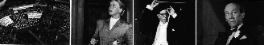
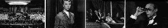
Extrait des entretiens Hitchcock-Truffaut:
A.H: ...pour que cette scène obtînt sa force maximale, l'idéal eût
été que tous les spectateurs sachent lire la musique.
F.T: Cela ne me paraît pas évident...
A.H: J'ai pris tant de précautions avec les cymbales que je n'ai
aucune confusion à craindre de ce côté là, mais lorsque la caméra
se promène sur la partition du joueur de cymbales, vous vous
souvenez ?
F.T: ...oui, le travelling latéral sur la portée de notes ?
A.H: ...pendant ce travelling sur la portée, la caméra parcourt tous
ces espaces vides et se rapproche de la seule note que devra
jouer l'homme des cymbales. Le suspense serait plus fort si le
public pouvait déchiffrer la partition. 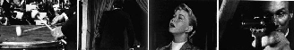
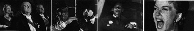
Viendront ensuite Faux coupable (1957), Vertigo (1958) (format WAV 241 Ko)
et La mort aux trousses (1959) qui est pour beaucoup la meilleure partition d'Herrmann.
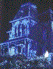Psychose,
le pari musical
En 1960 Hitchcock tourne
Psychose (format WAV 202 Ko).
C'est un nouveau pari du couple Hitchcock-Herrmann : le film est muet pour 50% ; la moitié des bobines
ne comporte pas un seul dialogue, uniquement de la musique.
Hitchcock avoue :
Ma principale satisfaction est que le film a agi sur le public, et
c'est la chose à laquelle je tenais beaucoup.
Dans Psycho, le sujet m'importe peu, les personnages m'importent peu ;
ce qui m'importe, c'est que l'assemblage des morceaux de film,
la photographie, la bande sonore et tout ce qui est purement technique
pouvaient faire hurler le public.
Je crois que c'est une grande satisfaction pour nous d'utiliser l'art
cinématographique pour créer une émotion de masse.
La scène du meurtre sous la douche est une scène d'une grande violence, cependant, visuellement,
le couteau ne touche jamais le corps, tout est fait au montage. De même d'un point de vue sonore,
aucun cri n'est poussé, tout est fait par la musique.
Le deuxième meurtre du film est celui du détective. Là encore le parallélisme entre
le montage et la bande son est évident. Dans cette scène la caméra est placée très haut,
au-dessus de l'escalier où va être poignardé le détective. Hitchcock rapporte :
La principale raison pour monter si haut la caméra était
d'obtenir un fort contraste entre le plan général de l'escalier et
le gros plan de la figure du détective lorsque le couteau s'abattait
sur lui. C'était exactement de la musique : la caméra en hauteur avec
les violons, et soudain la grosse tête avec les cuivres.
Une fois touché le détective tombe en arrière dans l'escalier. En fait, il ne tombe pas vraiment, on ne voit
pas ses pieds, mais on a l'impression qu'il descend l'escalier à reculons en frôlant chaque marche du
bout des pieds au rythme de la musique.
Les oiseaux
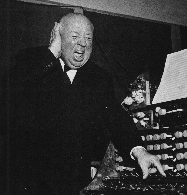
Autre gageure du tandem Hitchcock-Herrmann, Les oiseaux.
Naturellement, j'ai pris la licence dramatique de ne pas du tout faire crier les oiseaux.
Bernard Herrmann a supervisé le son de ce film qui n'a pas de musique.
Hitchcock précise:
Pour bien décrire un bruit, il faut imaginer ce que donnerait son
équivalent en dialogue.
Je voulais obtenir dans la mansarde un son qui signifierait la même
chose que si les oiseaux disaient à Mélanie: "Maintenant nous vous
tenons. Et nous arrivons sur vous. Nous n'avons pas besoin de pousser
des cris de triomphe, nous n'avons pas besoin de nous mettre en colère,
nous allons commettre un meurtre silencieux."
Pour la scène finale, lorsque l'on voit pour la première fois les oiseaux à
perte de vue, Hitchcock demanda un silence artificiel, "un silence électronique d'une
monotonie qui pouvait évoquer le bruit de la mer entendu très loin".
La rupture
Hitchcock tourne Marnie en 1964 (format WAV 222 Ko),
puis Le rideau déchiré en 1966. C'est sur ce film au nom symbolique
que la collaboration Hitchcock-Herrmann s'arrêta.
Ce film marque pour tous les spécialistes la fin du grand Hitchcock.
Déçu par le box-office de Marnie, Hitchcock avait perdu une partie de sa confiance en lui. Sur
Le rideau déchiré il se laisse influencer sur le choix des deux vedettes (Paul Newman, Julie Andrews),
mais plus gravement, on le convainc de se séparer de Bernard Herrmann. On accusa celui-ci
de l'impression de tristesse qui se dégageait de Marnie.
Pour Le rideau déchiré, Herrmann avait écrit et dirigé une partition d'une cinquantaine
de minutes absolument conforme à son talent et dont on peut apprécier la beauté puisqu'elle a été finalement enregistrée à Londres.
En fait le studio Universal n'aimait pas la partition et réussit à convaincre Hitchcock de ne pas l'utiliser.
Il faut rappeler qu'autour de 1966 la mode allait aux bandes originales qui faisaient vendre des disques, aux musiques
de films pour boîtes de nuits.
A ce jeu là, Herrmann, disciple de Wagner et de Stravinsky était perdu d'avance.
|